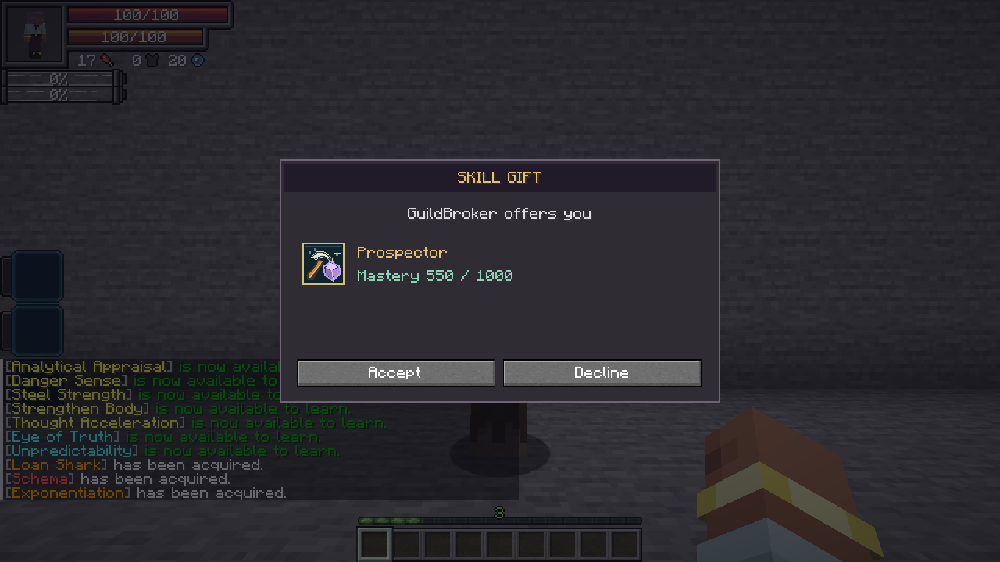
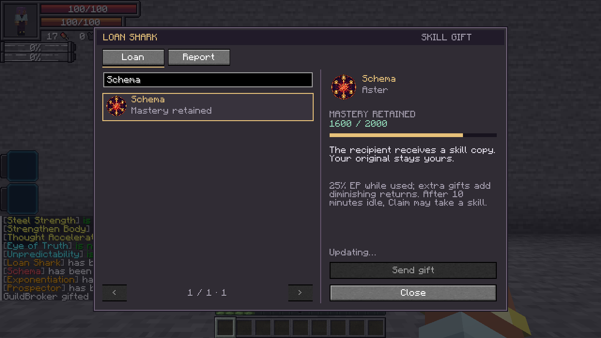
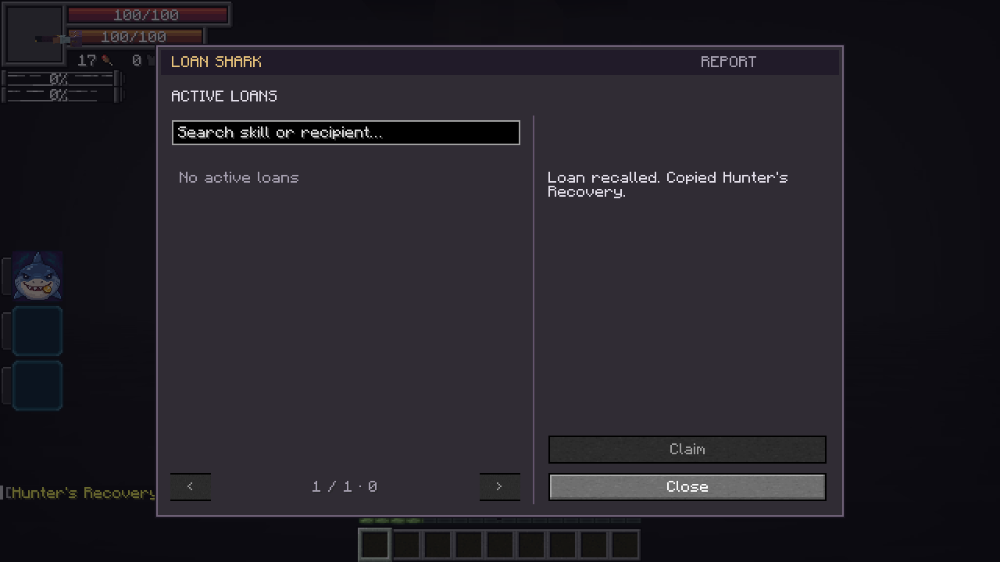
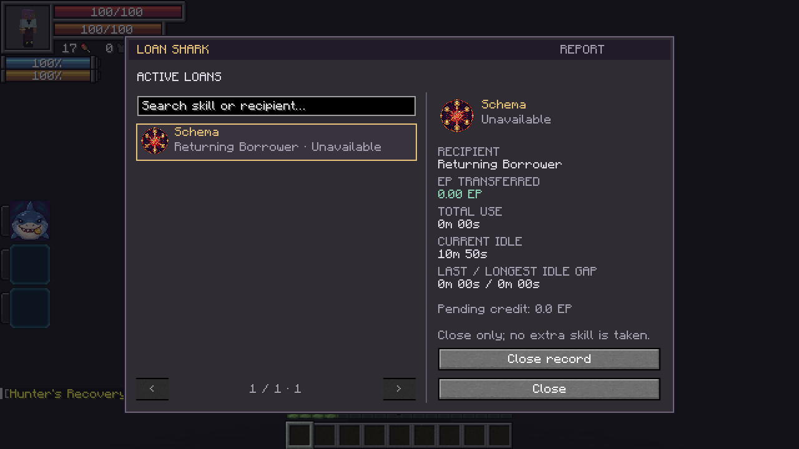
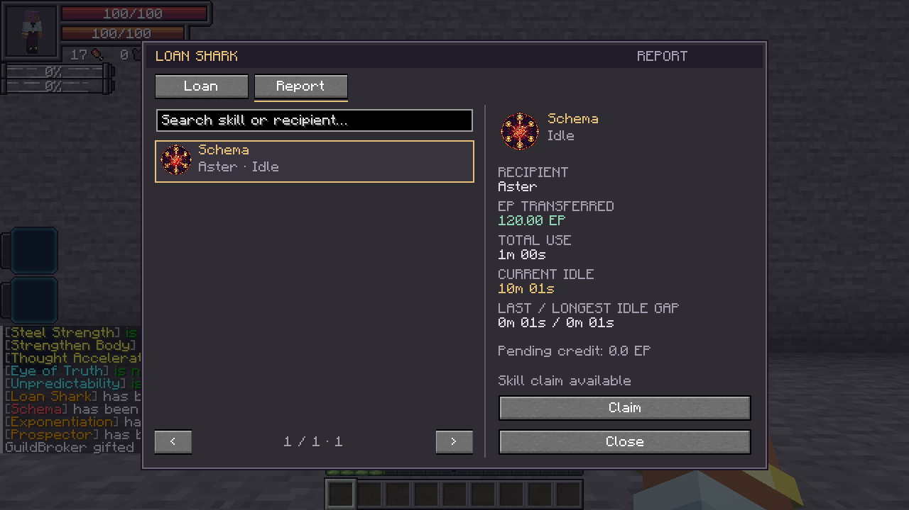

Loan · Active, Press
Loan and Report are separate native skill modes. Scroll the assigned skill slot to switch between them. Each opens its own menu, without menu tabs.
Aim at your subordinate or a player within 16 blocks, then activate Loan. Search your fully learned permanent lendable skills, select one and send the gift. Unfinished learning entries and skills you do not own are hidden. Players must accept; subordinate gifts are immediate. The invitation shows the sender, offered skill and retained mastery. It does not display the EP-sharing or Claim terms. Offers expire after 30 seconds and are rechecked when accepted.
The recipient gets a separately marked skill copy with retained mastery, learned mode progress and current cooldowns. Your original stays yours. Stored inventories, appraisal banks and active effects are not duplicated. Already-owned skills cannot be overwritten; temporary skills, dependent sub-abilities and Loan Shark itself are not lendable. Native acquisition restrictions still apply.
While a gifted skill is in use, it transfers 25% of all permanent EP gains. Additional active gifts on the same borrower stack with diminishing returns: each adds 75% of the previous increase, taking 25% of the EP still remaining.
| Active gifted skills | Total EP transferred |
|---|---|
| 1 | 25% |
| 2 | 43.75% |
| 3 | 57.8125% |
| 4 | 68.359375% |
The total approaches 100%, never exceeding it. Split this total equally among the active gifts, including gifts from different lenders. Idle and recalled gifts do not count; gifts to different borrowers stack separately.
Income includes EP earned through other skills, items or permanent-stat gains during use. Current aura/magicule recovery is not EP income. Transfer payments are not taxed or squared again. Offline lenders receive queued EP credit when available. Existing contracts automatically use the new rate; previously earned EP stays earned.
Casting/channeling and attributed hits count as use. Toggles count while enabled; native ticking passives count while ticking; detected in-slot combat passives and Exponentiation count while equipped. Resistances and native pure passives that cannot be slotted remain active while owned. Brief casts/hits count for a one-second window. Native ticking eligibility keeps ongoing passives active between callbacks. An equipped active-only skill is not automatically treated as permanently in use.


Damage type: None.
Report · Active, Press
Activate Report to open only the searchable ledger of your gifts. Each record shows:
- Gifted skill and recipient.
- EP transferred, including any credit waiting for you.
- Total use time.
- Current uninterrupted idle time, plus the last and longest intervals between uses.
Claim always recalls the gifted copy. If it has been unused for at least 10 minutes and is still idle, Claim also grants a random eligible skill you do not own, retaining mastery:
skillSteal true: remove the skill from the borrower and give it to you.skillSteal false: give you a copy; the borrower keeps their original.
Claim checks the current gamerule when used. Chained and all Ultimate-classified skills are excluded in both modes, including addon tiers implemented as Ultimate. The gifted copy itself can still be recalled regardless of its tier. The result message identifies whether the reward was copied or stolen. Claimed and recalled gifts leave Report’s active list. Confirmation remains available while its timers refresh.

Claim sooner, or while the skill is in use, and it only recalls the copy. If no eligible skill can be acquired, nothing extra is taken. Claims are checked on the server; completed contracts cannot be reused. The borrower must be online or loaded to receive an extra skill from Claim. Confirmed subordinate deaths close their loans automatically; player deaths keep respawnable loans. An unloaded living borrower remains listed as unavailable. For an older missing borrower, Close record removes the row without taking an extra skill and recalls the marked gift if that borrower later returns.
An unrelated independently acquired instance is not removed as the gifted copy.


Usage and contracts persist across save/restart. Time uses running server ticks: an unloaded borrower's use time stops, while its idle interval continues as the server runs. Time while the server is stopped does not count. Screenshots use a prepared scenario with accelerated ledger time.
Fusion does not erase a loan: use and EP income follow the controlling fused body, and recalling removes its shared gifted copy too.
Damage type: None. Cost / cooldown: None.